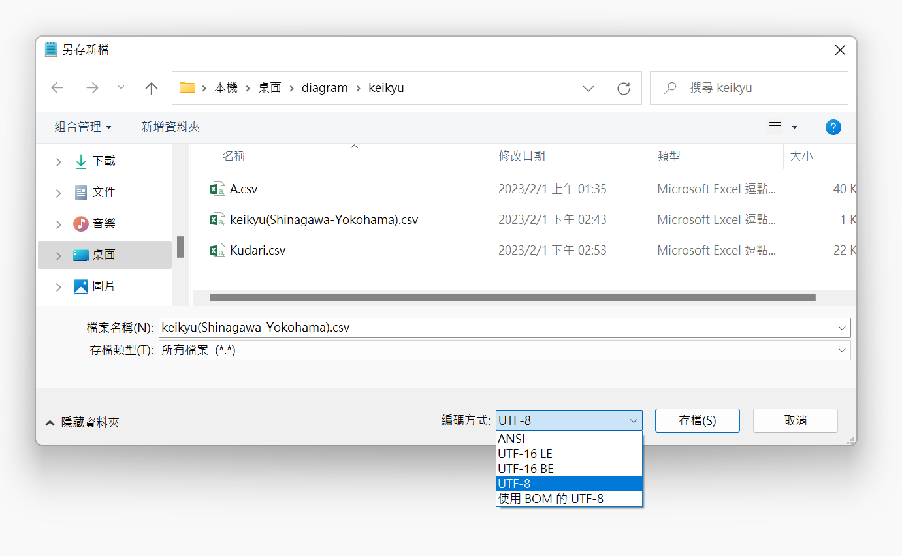

匯入檔案格式
Excel編碼轉換
因應 Excel 轉 .csv 可能出現亂碼的解決之道。
匯入網站後若有出現亂碼，再依以下的方式轉換。有些文字使用 ANSI 編碼和 UTF-8 編碼皆可運作，例如英文字母和數字。
解0：新版 Excel 直接存成 UTF-8
較新版本的 Excel（Microsoft 365、Excel 2019 以後）在存檔時，存檔類型可以直接選擇「CSV UTF-8(逗號分隔)」。這樣存出來的檔案可以直接匯入，不需要再轉換。
找不到這個選項的話，請使用以下的方法。
解1：給中文使用者 / 一般亂碼解法
由於舊版 Excel 預設的編碼方式為 ANSI，而網站讀取的編碼方式為 UTF-8。存檔完後請以記事本開啟，確認右下角的編碼方式。若右下角顯示 ANSI，且內容沒有亂碼，請在記事本內：
- 按下檔案 > 另存新檔
- 檔案名稱打上「您想要的名稱.csv」
- 存檔類型選擇「所有檔案」
- 編碼選擇「UTF-8」
- 存檔

解2：解1無法解決 / 日文使用者
若存檔完後以記事本開啟時，已經出現亂碼或 ??? ，請改用此種方式：
- 在 Excel 存檔時，存檔類型選擇「Unicode 文字」
- 以記事本打開這個檔案
- 此時編碼方式應該已經變成「UTF-16 LE」，且沒有亂碼
- 按下編輯 > 取代打開取代工具，將所有隔開資料的空白取代為半形英文逗號（,）。空白建議直接從檔案中複製，避免格式不符無法取代
- 按下檔案 > 另存新檔
- 檔案名稱打上「您想要的名稱.csv」
- 存檔類型選擇「所有檔案」
- 編碼選擇「UTF-8」
- 存檔
解3：以上方法皆無法解決時
請將無法正確轉換的文字留白，把正常的部分存成 .csv 匯入。網站本身就有編輯功能，匯入後在網站內的表格補上即可。編輯完再利用網站的匯出功能，就會得到沒有亂碼的檔案了！
FAQ：網路上提供的 .csv 檔（或網站匯出的檔案），用 Excel 打開是亂碼
如前所述，舊版 Excel 預設的編碼方式是 ANSI，但網路上的 .csv 檔和本網站匯出的檔案多是 UTF-8 編碼。您可以直接用記事本開啟編輯。
若您想要以 Excel 編輯，請遵循以下步驟：
- 新增空白活頁簿（開一個空白檔）
- 選取資料 > 從文字/CSV（舊版為資料 > 取得外部資料 > 從文字檔）
- 選取您的 .csv 檔並匯入
- 檔案原點（編碼）選擇「65001 : Unicode (UTF-8)」，分隔符號選擇「逗號」
- 按下載入（或一直點選下一步、確定），Excel 就會以正確格式開啟